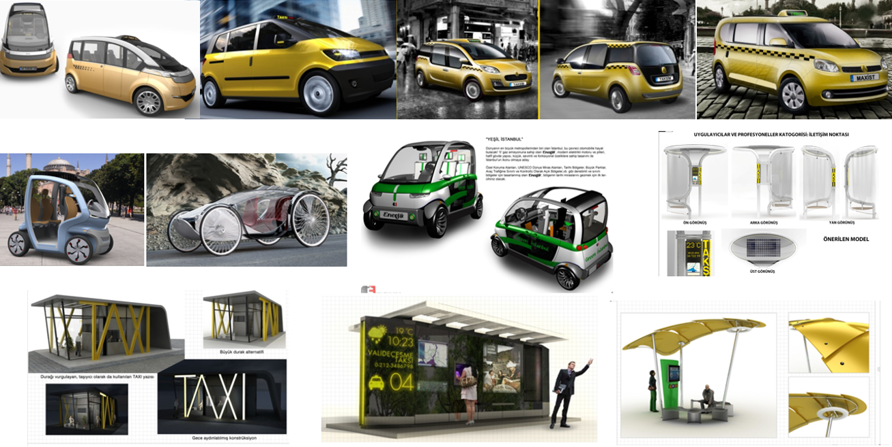

Istanbul "Taxi of Tomorrow" | Urban Design & Public Policy

Conceptual Taxi Design from this project
Background
In parallel with the developments of Istanbul as a modern city, taxi vehicles, taxi stands, and communication systems gained more importance as the mahor components of taxi system of Istanbul. In 2011, Istanbul Metropolitan Municipality Urban Design department launched an international industrial design competition to find the design ideas for the taxi of tomorrow for Istanbul which can provide a more comfortable service to the public and which are equipped with ergonomic, technologically advanced accessories, high security and safety measures that can meet the needs of the disabled, and its principles.
In order to achieve this goal through a creative design competition process, the relevant authorities of the city has defined four sub-themes that crate the taxi system and three designer profile who will develop design ideas for four the sub-themes.
- General-purpose taxi,
- "Eco-car" for controlled and restricted areas (specially protected areas, world heritage sites, historical sites, great parks, tools limited to traffic and controlled outdoor areas, etc ...) for "eco-car"
- Taxi rank (service points) species
- Taxi communication systems
Design Process
- Through a well-programmed participatory design process developed by a team in my lead, we created a highly diverse selection committee that involved all the relevant stakeholders for the jury. They helps to provide transfortation knowledge and advice which can help to synchroize people's ideas.
- For finding the next generation taxi design ideas for Istanbul through competition(people's envolvement and participation), an online voting system has been developed for the website of the competition to make citizens decisions effective in the final decision making process.
- My key and critical position at the management was about being responsible for convceiving and process managing of the “Design Competition for Istanbul’s Taxi System” for the complete re-architecture, deployment and management of Istanbul’s new generation taxi system. This kind of management focus started from conducting the R&D process for developing the industrialization program to the way Istanbul’s taxi customers will interact with their new taxi system. Following this research, I have developed the design brief for the contestant designers to design of an entirely new city taxi vehicle for Istanbul.
- Later on following the competition, I was also responsible for overseeing the development of the rules/regulations for what is, in essence, Istanbul’s ‘Taxi of Tomorrow” to develop the standards of taxi service in Istanbul.
- The competition web site received 1,5 million clicks during the two weeks online public voting for the design proposals. 340597 votes determined the winning design proposals.